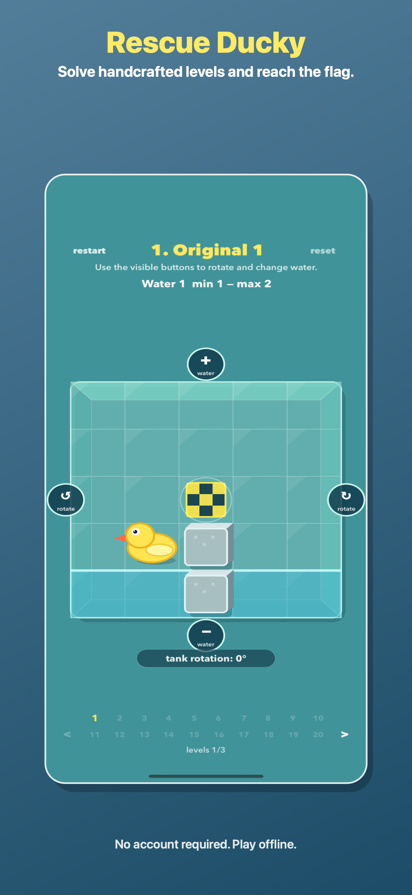

Turn the whole tank and let gravity change the path.
Puzzle d’eau et de rotation
Save Ducky
Faites pivoter le réservoir en verre, montez ou videz l’eau, et guidez Ducky dans de courts puzzles physiques faits main.

A small puzzle toy with visible rules
Every level is a transparent tank. You can see the duck, the flag, blockers, and water depth before you move, then solve with simple direct controls.
Raise, drain, drag, or use optional sound controls on supported devices.
No account, no required network connection, and no cloud save dependency.
Screenshots


Guides
Save Ducky est un jeu compact de puzzles d’eau : faites tourner le réservoir, ajustez le niveau et guidez Ducky jusqu’au drapeau.
Learn the core goal, controls, and level flow.
Find contact details and troubleshooting notes.
Read what data Save Ducky uses.